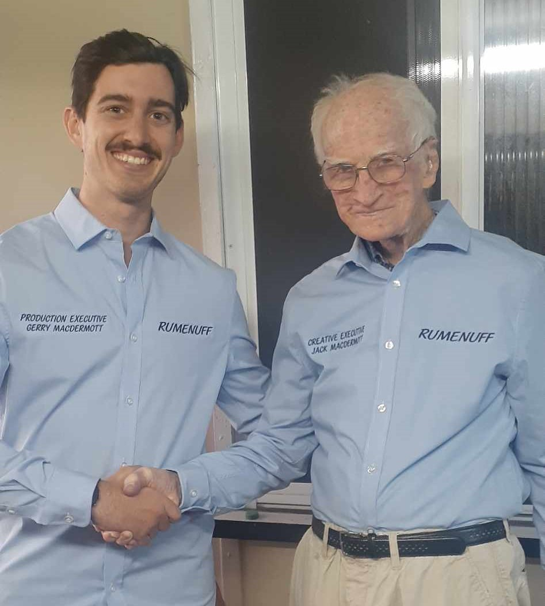
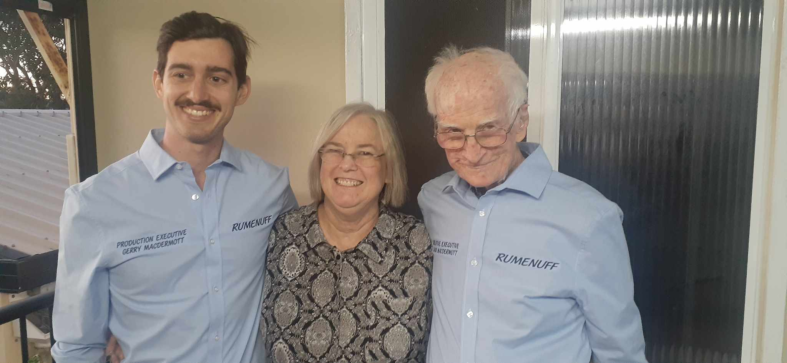

R U MAD ENOUGH FOR RUMENUFF?
About the Author

Jack MacDermott
Creative Executive
The mastermind behind the RUMENUFF enterprise, Jack has always been a master of word games. An exceptional scrabble player and a man who did cryptic crosswords and thought "I can do this, but better". For several years, Jack created his own 'quirkic' crosswords which was arguably several RUMENUFF puzzle within a crossword. Now a jump into the modern era, Jack decided to take his work digital and RUMENUFF was created to share the scary insight into the mind of a MAD man.
Gerry MacDermott
Production Executive
Of course the jump into the digital world isn't as easy as one world hope. Nor is it as easy as someone with minimal coding experience would hope. In this case of myself, Gerry MacDermott, Jack's grandson, filled the man's MAD mind with promises of a shiny website (which I foolishly thought would be easy)! Over several years of work (most of it procrastinating and an overseas holiday) here we are with something functioning most of the time!
Margaret MacDermott
Assistant to the Creative Executive
No hare-brained idea would be possible without the help of someone like Margy. If she wasn't involved this whole concept would still be chicken scribble on a notepad. Marg is the glue that keeps the RUMENUFF train on tracks and I cannot thank her enough for; being the filter for Jack's ideas, transcribing (and possibly translating) his writing to computer, as well as the general torment that comes from being around Jack.
Honourable Mentions
Honourable mention to all those who have helped with ideas and testing and bug reporting, it is greatly appreciated. In saying that, you are all not honourable enough to get your names displayed. And too that one person reading this who thinks they deserve a shout out as a "Sales Executive" keep dreaming (you know who you are).
Much Love and thanks for Enjoying,
Jack, Gerry and Marg